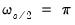
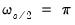

An important element of time series data is seasonality or
cyclicality. Typically, seasonality is treated as a stationary feature in most time series models. Nevertheless, non-stationarity, particularly of the unit-root kind, can be an important feature within the cyclical components themselves, and can give rise to similar inferential inaccuracies and concerns one often encounters with traditional unit root series. Accordingly, identifying the presence of unit roots at one or more seasonal frequencies is the subject of the battery of tests known as
seasonal unit root tests.
EViews offers several seasonal unit root tests, including the classical Hylleberg, et al. (1990) test, the Smith and Taylor (1999) likelihood ratio test, the Canova and Hansen (1995) test, the Taylor (2003) robust stationarity test, and the Taylor (2005) variance ratio test.
In the group, three options should be specified: , , and :
Furthermore, the traditional HEGY and the HEGY Likelihood Ratio test allow for configuration of the procedures. In particular, one can select either automatic or user-specified lag selection. The default procedure is automatic selection using the AIC, but automatic selection supports:
Click on to compute the tests at the default settings and display the results.
The output is similar to that of the traditional HEGY test. The primary difference is that statistics are all computed as F-statistic and so all statistics are positive. Furthermore, since we have included spectral intercepts and trends, the latter variables are shown in the regression output in the second table. Not depicted here are the results for the joint tests, and the test regression equation.


 as choices.
as choices. 
 , and the remaining 5 harmonic pair frequencies for
, and the remaining 5 harmonic pair frequencies for  . of the output is given below:
. of the output is given below: and :
and : , frequency , and the 5 harmonic pair frequencies
, frequency , and the 5 harmonic pair frequencies  for , along with the relevant critical values:
for , along with the relevant critical values: